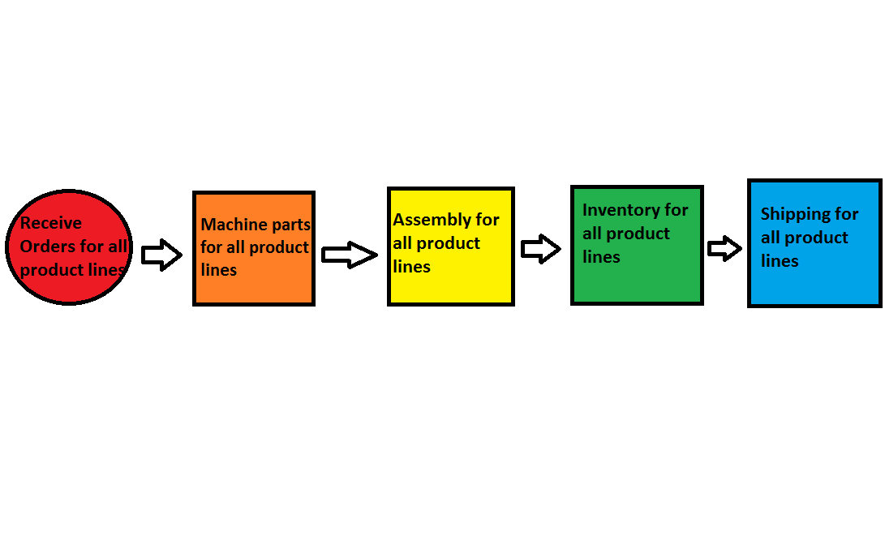
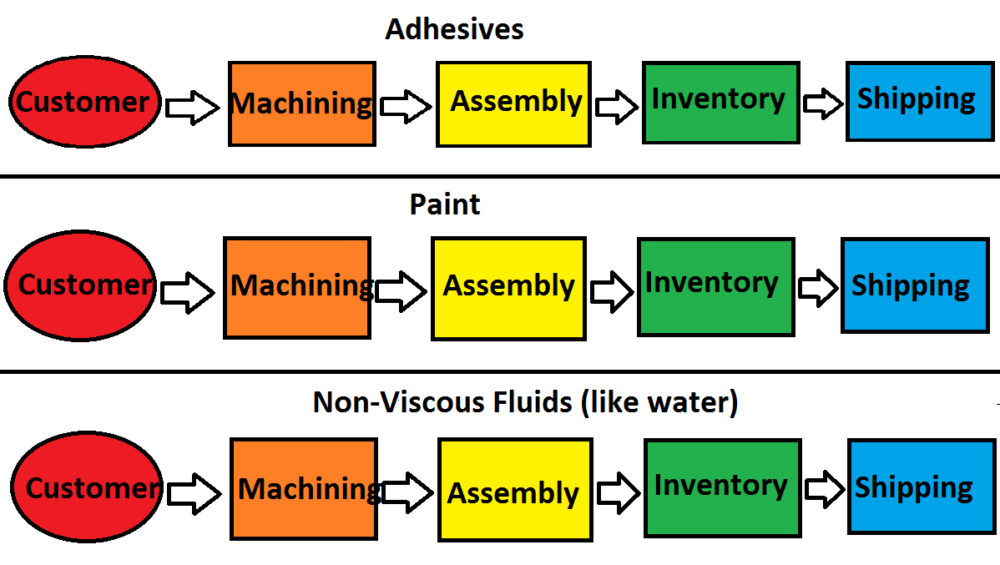

SCO 3001 Operations Tour Project Process Design and Management
Until recently, Graco used to organize their process by the different stages of a product's development. For instance, assembly for all products used to take place in one centralized location

Now, they organize their process by product lines. This change has made it easier for Graco to manage their cost, quality, and schedule due to the separation of strategic business units.

Other Facts About Graco's Process Design and Management
Graco's Products are Assembled-To-Order. When they receive a customer order, they already have many completed subassemblies, and only have to add a few customizations to the final product.
Graco has classified it's products into two main categories: regular and high-priority. Items are deemed high-priority if they have a profit margin over 20%. Graco makes every effort to ship these items out in five days or less.
For regular-priority products, Graco sets a promise delivery date with the customer which can range anywhere between 1 week and 2 months.
An interesting point the tour guide brought up about Graco's process is that it flows well both ways. When a customer returns an order, it is swiftly disassembled, the good parts are recycled, and then it is rebuilt and reshipped to the customer.
Some metrics Graco uses to keep it's process in line are on-time delivery %, lead time, and unit fill rate (for subassemblies, not finished products).